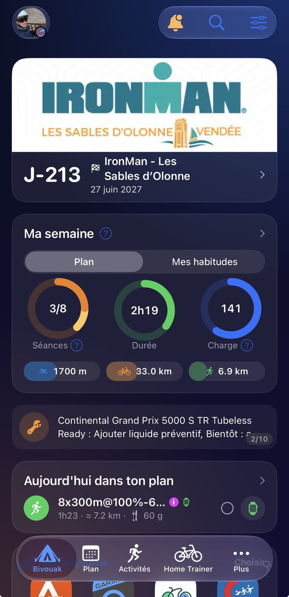
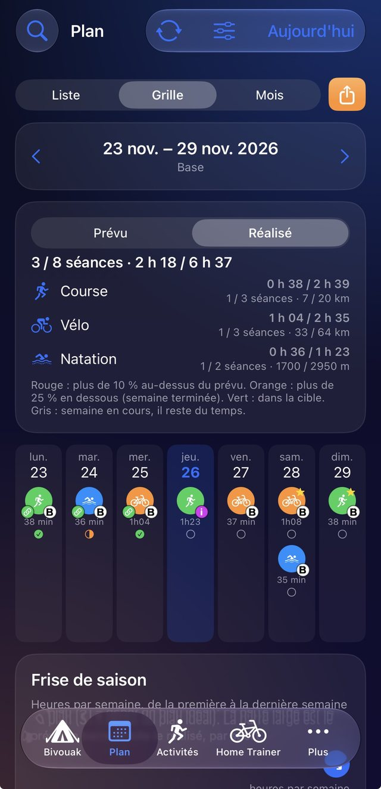
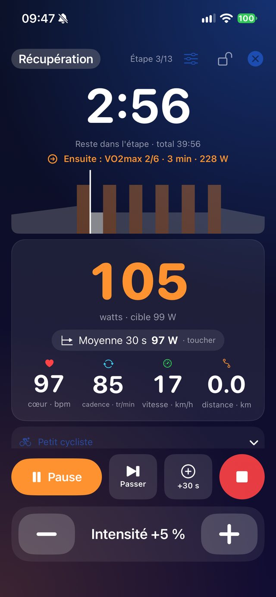
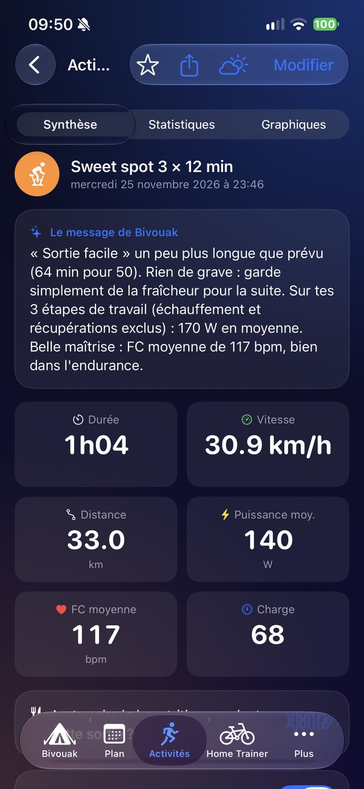
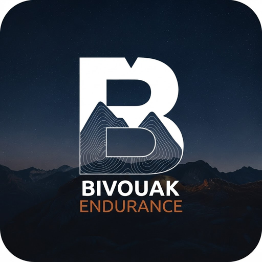

📅
Prépare
Des plans d’entraînement construits vers tes objectifs de course.
Application iPhone pour les sports d’endurance
Bivouak Endurance est une application qui rassemble ton entraînement, ta forme, ton matériel et tes courses. Pour la course à pied, le trail, le vélo, la natation et le triathlon, du premier dossard jusqu’à l’Ironman.
Le bivouak, c’est l’endroit où l’on pose son sac pour faire le point avant de repartir. Ici, tu poses ta pratique : où tu en es, où tu vas, et de quoi tu as besoin pour y arriver. Utile avec ou sans plan d’entraînement.
Des plans d’entraînement construits vers tes objectifs de course.
Ta forme, ta charge et tes progrès en un coup d’œil.
Ton matériel, ses kilomètres et son entretien.
Ta nutrition, ton budget, tes courses et tes documents.
Quelques écrans, tels qu’ils s’affichent sur iPhone.




Chaque brique ouvre ses fonctions, une par une.
Compatible Apple Watch et Garmin Connect, et, via Intervals.icu, avec Coros, Polar, Suunto, Wahoo ou Strava. Voir comment ça marche.
Pas de compte, pas de serveur Bivouak, pas de publicité, aucun outil de mesure d’audience. Tes séances, tes photos et tes documents sont enregistrés sur ton iPhone. Les connexions facultatives (Intervals.icu, Garmin, météo Apple) ne servent que si tu les actives.

Bivouak Endurance arrive sur l’App Store.